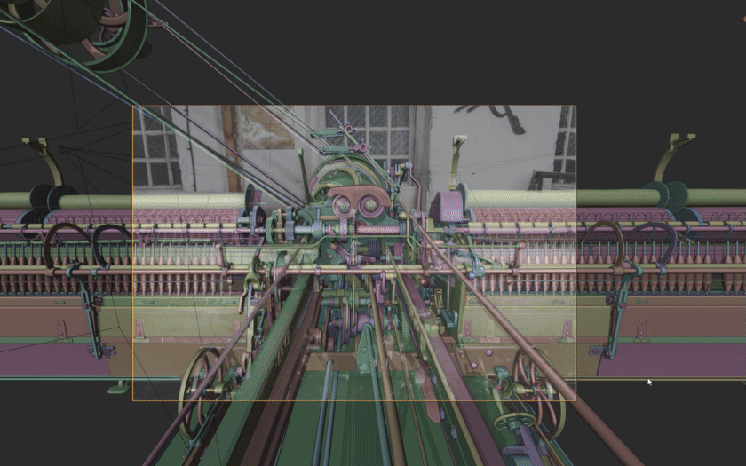
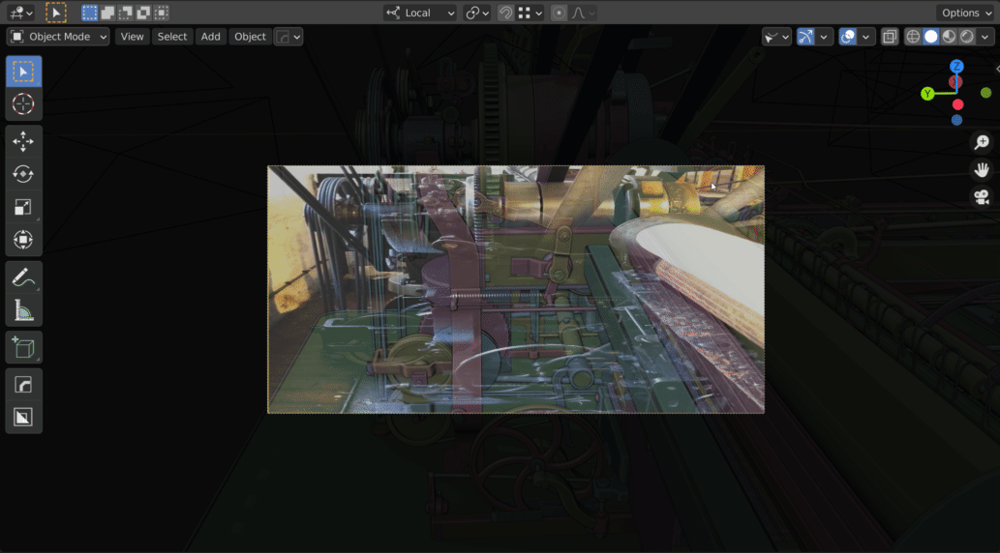
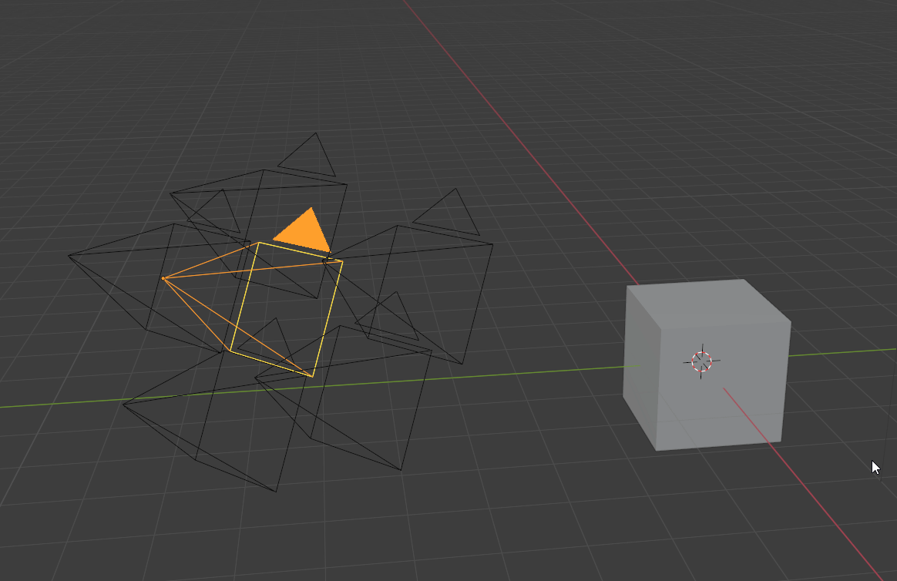
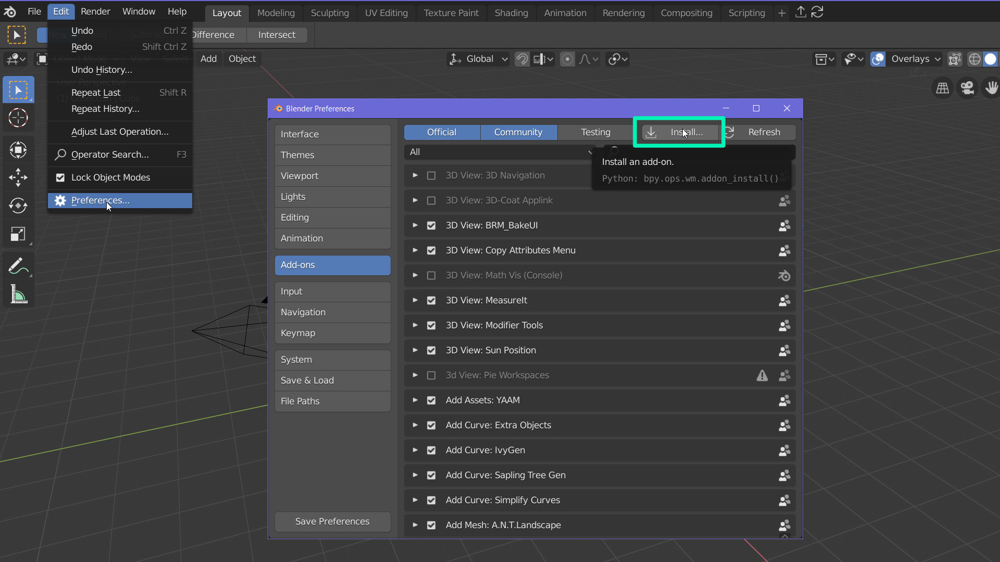
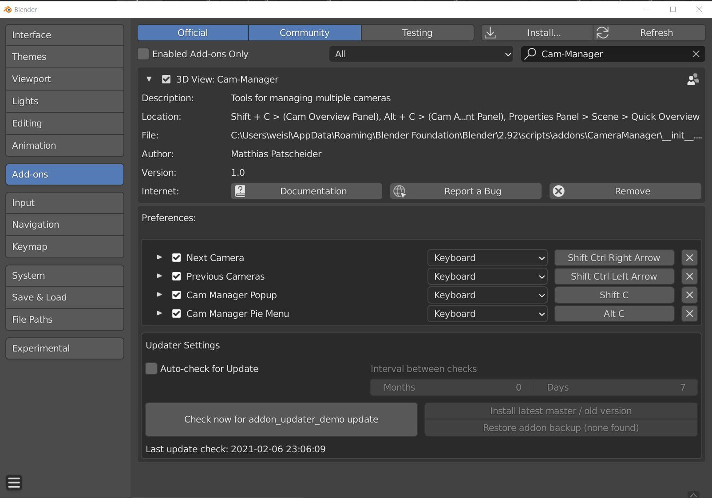

What is Cam-Manager?
Cam-Manager is an add-on to organize scene cameras and tweak their settings directly from the 3D view. The mission of this addon is to bring all camera related relevant settings and information as close to the user as possible. Camera handling should become as simple and fast as using a smartphone camera.
Feature Overview
- View all cameras and common camera settings at a glance: Compare different camera settings when doing your adjustments or when renaming your cameras.
- Toggle Cameras with hotkeys (default: Ctrl + Shift + Arrow Left/Right) and from the different addon overview panels.
- Slick and efficient UI
- Camera Resolution: Assign different resolutions to each camera
-
Lock/Unlock Camera: Lock/Unlock all camera transformations instantly from both the overview panel or pie menu
-
Render Slots: Assign different render slots to different cameras to avoid overwriting other camera renders.
-
Camera Collection: Create or specify an existing camera collection to easily assign individual or all cameras to it. Keep them organized in the Outliner and quickly hide/show all of them.
-
Background Image Settings: Toggle the background image on/off, adjust opacity or change the render order directly from the 3D view (Pie menu).
-
Resolution from Background Image: Set the camera resolution from the camera background image.
-
World Material: Assign different world materials per Camera.
- Exposure: Compensate lighting intensity changes from cameras by assigning a camera-specific exposure value.
- Change hotkeys to your likings from the addon preferences.
Why Cam-Manager?
Stay Organized: See all the cameras and their most important values at one glance and adjust the values if needed.
Quick: All the functionality is at your fingertips and can be accessed from the 3D View. No need to scroll through different windows and panels. Find all the relevant information at one spot. No need to scan through different menus and windows.
Easy to use: The overview panel is a simple and well-structured spreadsheet and the operators are self-explanatory, with additional descriptions, if needed.
Continuous Support: The addon is well documented. All buttons, tools, and values have useful description texts when hovering. Development is still ongoing. Share your feedback, opinions, use-cases, needs and help me to improve the tool even further.
Use Case I: Camera Setup
 Lock/Unlock your camera transformations from the 3D View.
Lock/Unlock your camera transformations from the 3D View.
 Adjust viewport settings from the 3D view, display composition guides, darken the off-camera area, and hide all overlays.
Adjust viewport settings from the 3D view, display composition guides, darken the off-camera area, and hide all overlays.
 Tweak the camera settings like focal length and depth of field directly from the 3D View.
Tweak the camera settings like focal length and depth of field directly from the 3D View.
Use Case II: Model with Image Planes
A common workflow for recreating real-world objects like machines and architecture is to use camera background images. This workflow can be cumbersome with the default blender since different camera resolutions are not supported and viewport adjustment require multiple steps. Cam-Manager provides multiple tools to improve this workflow.
 Quickly toggle through different cameras with different resolutions (Ctrl + Shift + Left/Right Arrow) or via the overview panel.
 Change the viewport settings of the Background image from the viewport. Cam-Manager helps you compare the model and the image plane regularly by keeping your focus in the 3D View.
Change the viewport settings of the Background image from the viewport. Cam-Manager helps you compare the model and the image plane regularly by keeping your focus in the 3D View.
 Assign the camera resolution from the current background image.
Use Case III: Iterate on the Look
Test your product and scene from different angles and in different lighting conditions. Cam-Manager will support you in quickly try out your ideas and iterate on them.
 Assign the world material easily from the overview panel. Updates to the active camera are immediately applied to the scene.
Assign the world material easily from the overview panel. Updates to the active camera are immediately applied to the scene.
 Toggle through cameras with different world materials, exposure values, and render slots.
Toggle through cameras with different world materials, exposure values, and render slots.
 Assign the render slot and render. Avoid overwriting your previous camera shot!
Assign the render slot and render. Avoid overwriting your previous camera shot!
The UI
- Overview Panel: The overview panel presents you with the most important settings for all scene cameras at a glance while providing an easy and quick way to rename them and change common settings. The adjustment possibilities go beyond the blender default settings. Cam-Manager enables you to assign custom resolutions, world materials, and render slots per camera.
- Pie menu: Adjust your camera settings from the 3D view! The pie menu exposes the most common camera settings - like focal length and depth of field - for the currently active scene camera. You can further lock/unlock your camera, adjust background image settings, hide/show composition guides, and gizmos instantaneously.
- Scene Properties Panel It is a compacter version of the camera overview panel and can be found in the scene properties panel. It also allows you to rename cameras, change their visibility and locking states and assign them to the specified camera collection quickly.


Behind the curtain
Blender stores and uses certain values like the resolution, exposure, and world material as a global value in the blender scene and not as component of the camera. When switching the camera, the addon will set the current scene values to those stored per camera by the addon. This works perfectly when switching cameras with the tools provided by this addon. It will not work when changing the camera manually or when using other add-ons. This is unfortunately a limitation coming from blender implementation of cameras.
 Due to this limiation in the blender architecture, it is not possible to preview multiple cameras with different resolutions at the same time.
Download and Installation
Please purchase the Cam-Manager from any of the provided stores. The addon can be installed by going to File > User Preferences > Add-ons. Click at Install from File and specify the downloaded zip file in the newly opened window. Cam-Manager should now appear in your add-ons window and can be activated. Please contact me in case you run into any issues here.

Once installed, you can use the auto-updater in the user preferences to get the latest version of the addon.

Stores:
The Developer
Hello, my name is Matthias Patscheider. I have always been interested in pipelines and coding. I have been writing small scripts and addons all my professional life and even before. Working on these tools in my spare time is a welcome change to my everyday job as a 3D Environment Artists at Remedy. A lot of the tools are born from personal needs and try to solve real-world issues I face both at work and in personal projects. In this case, the core was initially developed for this project (https://www.artstation.com/artwork/D55b8o). I needed the possibility to change the resolution per camera and adjust the display setting of background images directly from the viewport. Since then, I have expanded it to a general-purpose camera tool. Exposing more values to the user and adding tools to organize multiple cameras.